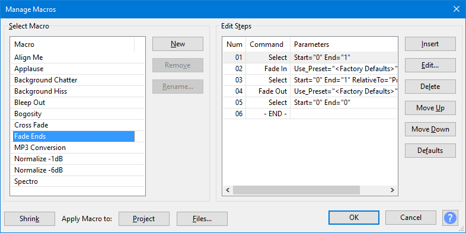
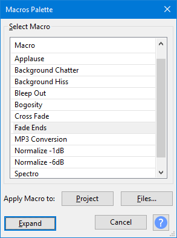

Macros
A Macro is a sequence of pre-configured commands (mainly effects) in a set order that can be applied automatically to projects or audio files. Any built-in, LADSPA, LV2, Nyquist, VST or Audio Unit (Mac) effect shown in the Effect Menu can be added to a Macro. You can also add plug-ins in any format that are shown in the Generate or Analyze Menus (including Vamp analysis effects), the built-in Find Clipping analyzer and a number of export commands.
Macros follow a fixed sequence of instructions. If you want more flexibility than that, you may want to look at Python Scripting which uses the same commands and the python language.
What Macros are For
The three main uses of Macros are:
Batch processing: where many audio files are processed unattended with one or more effects then exported to a new file.
Effects automation: where the selected audio in the track or tracks in the current project is subjected to the same prescribed sequence of effects, and optionally, a file exported from the entire audio. Note that Macros can contain Select commands to make their own selections as the Macro runs.
Macro presets: where selected effects and their settings are stored for quick reuse.
How to Use Macros
Macros are available from the Tools Menu.
- To manage macros, i.e. to create, edit and test them.
- For a toolbox of macros.
- To apply one named macro.
There are also some examples of macros and tips on using them.
Manage Macros
Use if you need to create a new Macro or to edit an existing Macro.
- 
For further details on creating, editing and sharing Macros, see the Manage Macros page.
Macros Palette dialog
Use the button to show a reduced Macros Palette dialog with a simple list of the existing Macros.
This dialog is also available directly via
- 
Using the button on this reduced dialog will return you to the full Manage Macros dialog.
Apply Macro to
Both the Macros dialog and the Macro Palette dialog have 'Apply Macro to' Buttons.
Project: Use the button to apply the selected Macro to the current project.
Files: Use the button to apply the selected Macro to selected external audio files that are in a single directory.
For more details see the Apply Macro page.
Macros Examples
See the Macros Examples page for examples of using Macros